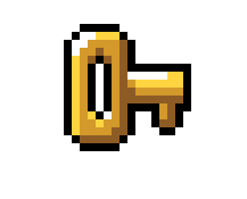

MARIO'S MUMMY
Como podeis ver, Mario esta encerrado en un laberinto sin fin, niveles infinitos, por lo tanto debemos de intentar conseguir el máximo de monedas posibles avanzando por cada nivel y perdiendo el mínimo número de vidas. Para ello tendremos que rodear los bloques de piedra para poder ver lo que hay dentro. En ellos encontraremos:
-
Tendrás que escapar de ella, sino te quitará una vida. Puede salirte en los bloques y aparecerá otra en el mismo lugar dónde tu apareciste.

Cada una de ellas suma 50 en tus monedas.
Tendrás que salvar a nuestra princesa Peach y coger la llave para poder pasar al siguiente nivel.
- 
La llave mencionada anteriormente.

La estrella del super poder, hará que seas inmune y puedas matar una sola momia sin que te bajen las vidas.
Muestra que has pasado ya por ahí.
Si necesitas reiniciar el nivel después de leerte las instrucciones O